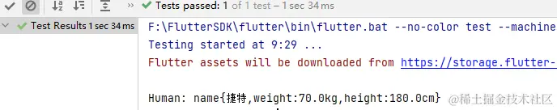
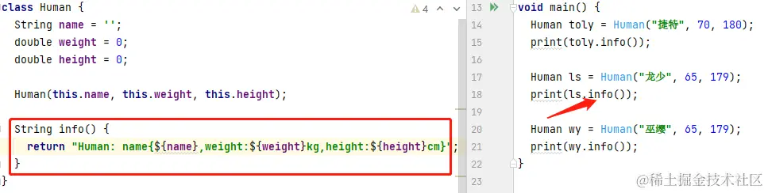
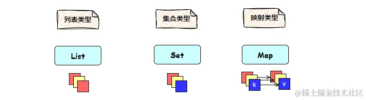
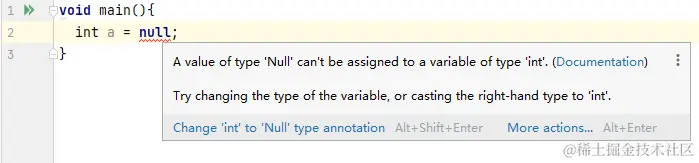
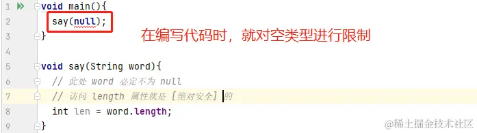
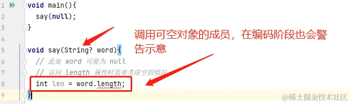

- 01 前言-教程内容导读.md.html
- 02 Flutter 开发环境的搭建.md.html
- 03 新手村基础 Dart 语法 (上).md.html
- 04 新手村基础 Dart 语法 (下).md.html
- 05 Flutter 计数器项目解读.md.html
- 06 猜数字界面交互与需求分析.md.html
- 07 使用组件构建静态界面.md.html
- 08 状态数据与界面更新.md.html
- 09 校验结果与提示信息.md.html
- 10 动画使用与状态周期.md.html
- 11 猜数字整理与总结.md.html
- 12 电子木鱼界面交互与需求分析.md.html
- 13 电子木鱼静态界面构建.md.html
- 14 计数变化与音效播放.md.html
- 15 弹出选项与切换状态.md.html
- 16 用滑动列表展示记录.md.html
- 17 电子木鱼整理与总结.md.html
- 18 白板绘制界面交互与需求分析.md.html
- 19 认识自定义绘制组件.md.html
- 20 通过手势在白板上绘制.md.html
- 21 白板画笔的参数设置.md.html
- 22 撤销功能与画板优化.md.html
- 23 应用界面整合.md.html
- 24 数据的持久化存储.md.html
- 25 网络数据的访问.md.html
- 26 教程总结与展望.md.html
- 捐赠
04 新手村基础 Dart 语法 (下)
一、面向对象
在学习的时候我们要明确一点，语言是一种工具，语法特性是为了方便我们实现需求的，不是故意制造出来刁难我们的。任何语法点的存在，都有它的价值和独特性。面向对象是 Dart 语法体系中非常重要的一支，也是一个威力无穷的工具。对于初学者而言，很难对其有深刻的认知，需要你在实践中累积与体悟。这一小结，将介绍一下面向对象最基础的语法点。
1. 自定义数据类型
上一篇说了，Dart 中有一些基础的数据类型。但有些场景下，只用基础的数据类型，解决问题是非常麻烦的。比如，现在要记录人身高体重数据信息。
编程的本质是对数据的维护，而 身高、体重、姓名 三个数据是成对存在的，可以将其视为一个事物的三个属性，而在代码中如何表示有若干属性的某个事物呢? 答案就是 自定义数据类型，也就是人们常说的面向对象思想。
如下所示，通过 class 关键字来定义一个类型，{} 内是类的具体内容；其中可以定义若干个属性，也称之为 成员属性 。
class Human {
String name = '';
double weight = 0;
double height = 0;
}
下面 tag1 处表示定义了一个 Human 类型的 toly 对象，将其赋值为 Human() ; 其中 Human() 表示通过构造函数来创建对象，也可以称之为 实例化 Human 对象 。 通过 对象.属性 =可以对属性进行赋值; 通过 对象.属性 可以访问属性对应的数据。

void main(){
Human toly = Human(); // tag1
toly.name = "捷特";
toly.weight = 70;
toly.height = 180;
print("Human: name{${toly.name},weight:${toly.weight}kg,height:${toly.height}cm}");
}
这就是最简单的面向对象思想:通过一个自定义类型，定义若干个属性；通过实例化对象，来维护属性数据。
2. 构造函数
构造函数本身也是一个函数，它的价值在于：实例化对象时，可以对属性进行初始化。如下所示，构造函数的函数名和类名相同；参数列表就是函数的参数列表语法，不再赘述，这里是普通的参数列表传递参数；在实例化对象时，会触发函数体的逻辑，对属性进行赋值，这就是通过构造函数初始化成员属性。
注: 当入参名称和成员属性名称相同时，使用 this 关键字表示当前对象，对属性进行操作，从而避免歧义。
class Human {
String name = '';
double weight = 0;
double height = 0;
Human(String name,double weight,double height){
this.name = name;
this.weight = weight;
this.height = height;
}
}
这样就可以在实例化对象时，传入参数，为成员属性进行赋值：
void main(){
Human toly = Human("捷特",70,180);
print("Human: name{${toly.name},weight:${toly.weight}kg,height:${toly.height}cm}");
}
另外，构造函数中，通过 this 对象进行赋值的操作，可以进行简化书写，如下所示：
class Human {
// 略同...
Human(this.name,this.weight,this.height);
}
小作业: 自己可以练习一下，构造方法中
命名传参{}和位置传参 []
3. 成员函数(方法)
自定义类型中，不仅可以定义成员属性，也可以定义成员函数。一般来说，在面向对象的语言中，我们习惯于称类中的函数为 方法 。姓名通过一个小例子，来体会一下成员方法的价值:
如下所示，创建了三个 Human 对象，并且打印了他们的信息。可以看到 print 里面的信息格式基本一致，只是对象不同而已。每次都写一坨，非常繁琐。
void main(){
Human toly = Human("捷特",70,180);
print("Human: name{${toly.name},weight:${toly.weight}kg,height:${toly.height}cm}");
Human ls = Human("龙少",65,179);
print("Human: name{${ls.name},weight:${ls.weight}kg,height:${ls.height}cm}");
Human wy = Human("巫缨",65,179);
print("Human: name{${wy.name},weight:${wy.weight}kg,height:${wy.height}cm}");
}
我们可以定义一个成员方法，来处理介绍信息的获取工作：在成员方法中可以访问成员属性，这就相当于通过函数给出一个公共的访问入口，任何该类对象都可以通过 .info() 获取信息。如下所示，在使用时就会非常简洁和方便：

小作业: 为 Human 类型添加一个 bmi 方法，用于计算
体质指数。
4. 类的继承
比如要记录的信息针对于学生，需要了解学生的学校信息，同时也可以基于身高体重计算 bmi 值。在已经有 Human 类型的基础上，可以使用关键字 extends,通过继承来派生类型。
在 Student 类中可以定义额外的成员属性 school， 另外 super.name 语法是：在入参中为父类中的成员赋值。
class Student extends Human {
final String school;
Student(
super.name,
super.weight,
super.height, {
required this.school,
});
}
这样就可以通过 Student 来创建对象，通过继承可以访问父类的方法，如下所示，Student 对象也可以使用 bmi 方法获取 体质指数 ：
void main() {
Student toly = Student("捷特", 70, 180,school: "安徽建筑大学");
print(toly.bmi());
}
5. 子类覆写父类方法
当子类中存在和父类同名的方法时，就称 子类覆写了父类的方法 ，在对象调用方法时，会优先使用子类方法，子类没有该方法时，才会触发父类方法。比如下面的代码，子类中也定义了 info 方法，在程序运行时如下：
注: 通过 super. 可调用父类方法; 一般子类覆写方法时，加 @override 注解进行示意 (非强制)
class Student extends Human {
// 略同...
@override
String info() {
String info = super.info() + "school: $school ";
return info;
}
}
void main() {
Student toly = Student("捷特", 70, 180,school: "安徽建筑大学");
print(toly.bmi());
print(toly.info());
}
对于初学者而言，面向对象的知识了解到这里就差不多了。这里介绍的是基础中的基础，随着知识的累计，未来肯定会接触到更多其他的知识。
二、聚合类型
日常生活中，还有一类数据总是批量呈现的：比如一个班级里有很多学生，一个英文字典有很多对应关系，围棋盘中有很多点位。如何对结构相似的批量数据进行维护，也是编程中非常重要的事。可以称这样的数据为 聚合类型 或 容器类型 。在 Dart 中，有三个最常用的聚合类型，分别是 列表 List、 映射 Map 和 集合 Set :

对于聚合类型而言，本质上是 Dart 语言提供的内置自定义类型，也就是说他们也是通过 class 定义的，其中有成员属性，也有成员方法。我们在一开始并不能对所有的成员方法进行面面俱到的讲解，只会对元素的添加、修改、访问、删除进行介绍，了解最基础的使用。
1. 列表 List
列表类型中可以盛放若干个同类型的对象，并且允许重复。在声明列表对象时，其中盛放的对象类型放在 <> 中，我们称之为 泛型 。如下定义 int 泛型的列表，就表示列表中只能盛放整数数据；可以通过 [] 便捷的创建列表对象，其中盛放初始的数据：
List<int> numList = [1,9,9,4,3,2,8];
我们一般称元素在列表中的位置为 索引 , 索引从 0 开始计数。通过索引可以对索引处的值进行获取和修改的操作，代码如下 :
List<int> numList = [1,9,9,4,3,2,8];
int second = numList[1];
print(second);
numList[3] = 6;
print(numList);
---->[控制台输出]----
9
[1, 9, 9, 6, 3, 2, 8]
通过 add 方法，可以在列表的末尾添加一个元素；insert 方法，可以在指定的索引处插入一个元素：
List<int> numList = [1,9,9,4,3,2,8];
numList.add(10);
numList.insert(0,49);
print(numList);
---->[控制台输出]----
[49, 1, 9, 9, 4, 3, 2, 8, 10]
列表方法中 remove 相关方法用于移除元素，比如 removeAt 移除指定索引处的元素；remove 移除某个元素值； removeLast 移除最后元素：
List<int> numList = [1,9,9,4,3,2,8];
numList.removeAt(2);
numList.remove(3);
numList.removeLast();
print(numList);
---->[控制台输出]----
[1, 9, 4, 2]
对于聚合型的对象来说，还有一个比较重要的操作，就是如何遍历访问其中的元素。通过 .length 可以得到列表的长度，所以自然可以想到使用 for 循环，让索引自加，就能依次输出对应索引的值：
List<int> numList = [1, 9, 9, 4];
for (int i = 0; i < numList.length; i++) {
int value = numList[i];
print("索引:$i, 元素值:$value");
}
---->[控制台输出]----
索引:0, 元素值:1
索引:1, 元素值:9
索引:2, 元素值:9
索引:3, 元素值:4
如果遍历过程中，不需要索引信息，也可以通过 for-in 循环的语法，方便地遍历列表中的值：
for(int value in numList){
print("元素值:$value");
}
---->[控制台输出]----
元素值:1
元素值:9
元素值:9
元素值:4
2. 集合 Set
集合类型也可以盛放若干个同类型的对象，它最大的区别是 不允许重复 ，它同样也支持一个泛型。如下定义 int 泛型的集合，就表示列表中只能盛放整数数据；可以通过 {} 便捷的创建集合对象，其中盛放初始的数据。
如下所示，当创建的集合在存在重复元素，将被自动合并，在输出时只有一个 9 元素：
Set<int> numSet = {1, 9, 9, 4};
print(numSet);
---->[控制台输出]----
{1, 9, 4}
集合本身是没有索引概念的，所以无法通过索引来访问和修改元素，因为集合本身在数学上的概念就是无序的。它可以通过 add 方法在集合中添加元素；以及 remove 方法移除某个元素值：
Set<int> numSet = {1, 9, 4};
numSet.add(10);
print(numSet);
---->[控制台输出]----
{1, 4, 10}
集合最重要的特征是可以进行集合间的运算，这点 List 列表是无法做到的。两个集合间通过 difference、union 、intersection 方法可以分别计算差集、并集、交集。计算的结果也是一个集合：
Set<int> a = {1, 9, 4};
Set<int> b = {1, 9, 3};
print(a.difference(b));// 差集
print(a.union(b)); // 并集
print(a.intersection(b)); // 交集
---->[控制台输出]----
{4}
{1, 9, 4, 3}
{1, 9}
由于集合没有索引概念，使用无法像 List 那样通过 for 循环增加索引来访问元素；但可以通过 for-in 循环来遍历元素值：
Set<int> numSet = {1, 9, 4};
for(int value in numSet){
print("元素值:$value");
}
---->[控制台输出]----
元素值:1
元素值:9
元素值:4
3. 映射 Map
地图上的一个点，和现实中的移除位置一一对应，这种就是映射关系。地图上的点可以称为 键 key ，实际位置称为 值 value ; Map 就是维护若干个键值对的数据类型。 日常生活中有很多映射关系，比如字典中的字和对应释义、书目录中的标题和对应的页数、钥匙和对应的锁等。
应用映射中的一个元素记录着两个对象，所以 Map 类型有两个泛型，分别表示 key 的类型和 value 的类型。如下所示，定义一个 Map<int, String> 的映射对象，其中维护数字和英文单词；remove 方法可以根据 key 移除元素:
Map<int, String> numMap = {
0: 'zero',
1: 'one',
2: 'two',
};
print(numMap);
numMap.remove(1);
print(numMap);
---->[控制台输出]----
{0: zero, 1: one, 2: two}
{0: zero, 2: two}
通过 [key] = value 语法可以向映射中添加元素，如果 key 已经存在，这个行为就是修改对应的值：
Map<int, String> numMap = {
0: 'zero',
1: 'one',
2: 'two',
};
numMap[3] = 'three';
numMap[4] = 'four';
print(numMap);
---->[控制台输出]----
{0: zero, 1: one, 2: two, 3: three, 4: four}
对于映射来说，可以通过 forEach 方法来遍历元素值：
Map<int, String> numMap = {
0: 'zero',
1: 'one',
2: 'two',
};
numMap.forEach((key, value) {
print("${key} = $value");
});
---->[控制台输出]----
0 = zero
1 = one
2 = two
三、 语言特性
Dart 中有一些特殊的语言特性，比如空安全、异步等知识。这里简单介绍一下，能满足本教程的使用即可。
1. 空安全
Dart 是一个空安全的语言，也就是说，你无法将一个非空类型对象值设为 null :

如果希望对象可以赋值为 null ，需要在类型后加上 ? 表示可空：
这样，如果一个函数中是 String 入参，那么函数体内的 word 对象就必定不为 null ，这样就可以在编码时明确对象的可空性，做到被访问对象的空安全。

如果希望在调用时可以传入 null ，入参类型就是 String? ，那么在函数体内访问可空对象时，也在编码阶段给出警告示意。如果没有空安全的支持，编码期间就很难确定 String 对象是否可空，从而 null 调用方法的异常只能在运行时暴露；有了空安全机制，在编码期间就可以杜绝一些空对象调用方法导致的异常。

2. 异步任务
关于异步是一个很大的话题，这里只简单介绍一下用法。想要更深入了解，可以研读我在掘金发表过一个专栏 《Flutter 知识进阶 - 异步编程》
异步任务可以在未完成之前，让程序继续执行其他的逻辑，在完成之后接收到通知。拿最常见的文件读取异步任务来说：如下 test 函数中，使用 readAsString 异步方法读取一个文件，通过 then 监听对调，回调中的参数就是读取的字符串。
此时下面的 做些其他的事 将会在读取完毕之前触发。也就是说：一个任务没有完成，第二个任务可以进行，这就是异步。就像烧水和扫地两个任务可以同时进行。
String path = r'E:\Projects\Flutter\flutter_first_station\pubspec.yaml';
File file = File(path);
print("开始读取");
file.readAsString().then((value) {
print("===读取完毕: 文字内容长度 = ${value.length}====");
});
print("做些其他的事");
有些时候，需要等待异步任务完成，才能继续之后的任务。比如，只要水烧开才能去倒水，可以通过 await 关键字等待异步任务的完成，获取结果：
Future<void> test2() async{
String path = r'E:\Projects\Flutter\flutter_first_station\pubspec.yaml';
File file = File(path);
print("开始读取");
String content = await file.readAsString();
print("===读取完毕: 文字内容长度 = ${content.length}====");
print("做些其他的事");
}
有一点需要注意：在控制台输出时，main 函数结束后就会停止，而文件读取的结果要稍后才能完成，导致无法打印出读取结果。由于应用程序交互时一直在启动中，这个问题不会出现，也不用太在意。不过，大家可以在这里埋个小问题，在以后的生涯中尝试解决：
想个方法让 main 函数等一下，可以完成如下的输出效果：
四、本章小结
最基础的 Dart 语法就介绍到这里，对本教程的学习来说，这些基本上够用了。如果后面遇到其他的语法，会单独介绍一下。再次强调：这些知识只够入个门而言，Dart 还有非常丰富的语言特性。后期如果对 Flutter 感兴趣，请务必系统地学习一下 Dart 语言。
目前，本教程的晚宴食材已经准备就绪。下一章将分析一下 Flutter 计数器项目，了解官方提供的这道初始点心的烹饪手法，以及其中蕴含的知识点。
© 2019 - 2023 Liangliang Lee. Powered by gin and hexo-theme-book.